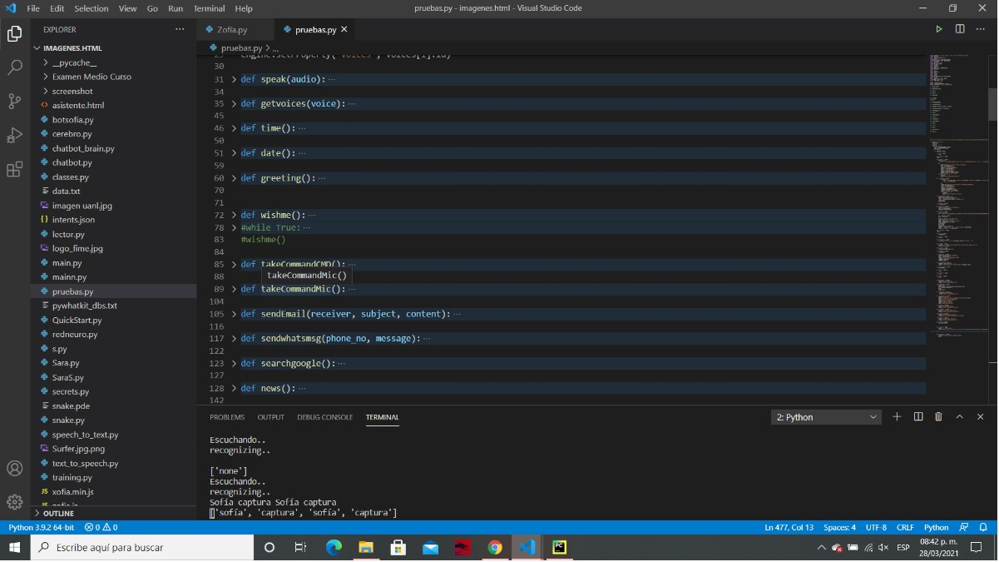
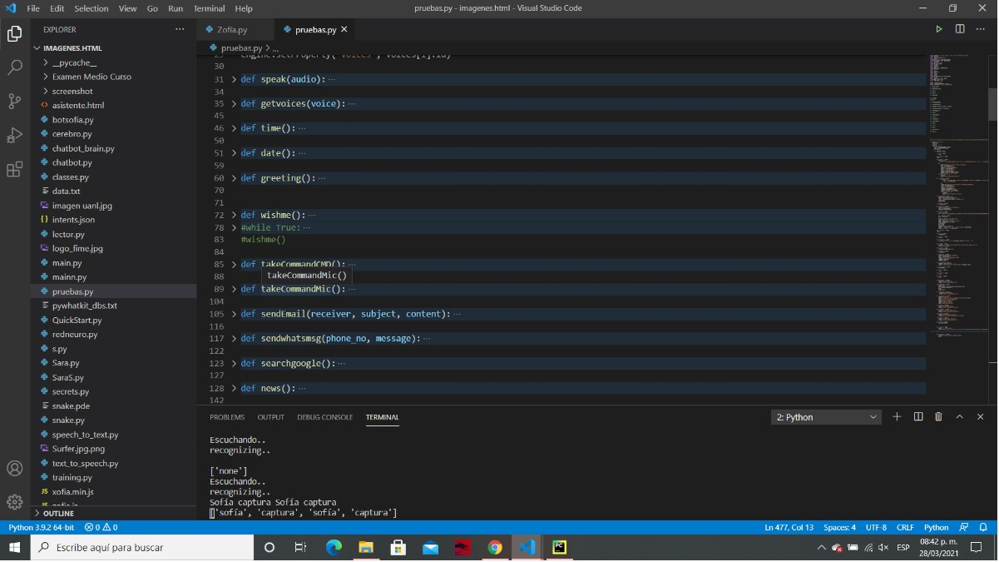
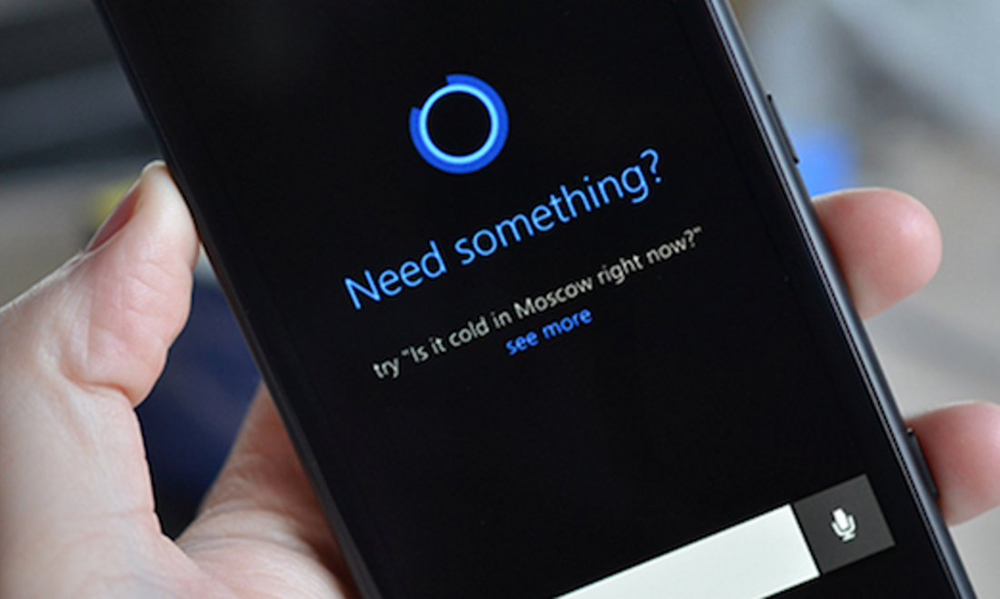
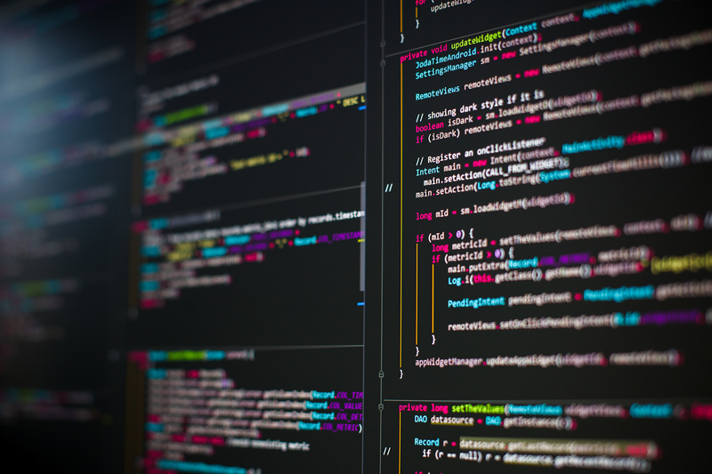
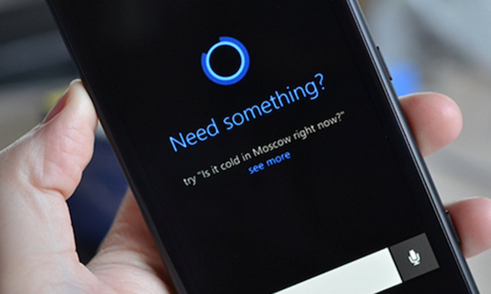
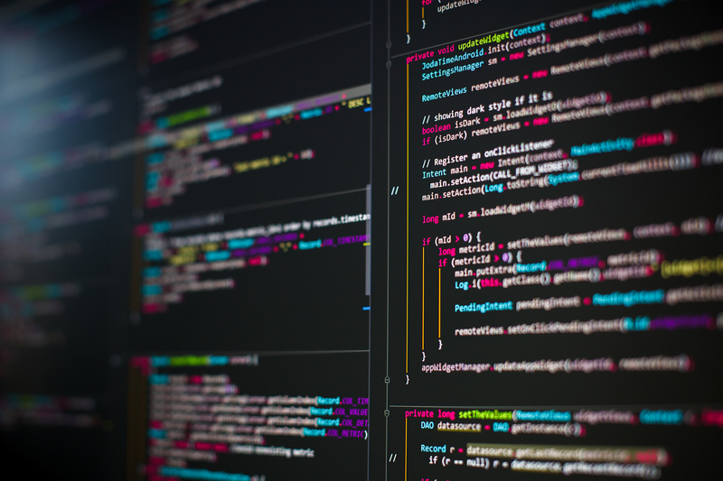

personales 2
uno de mis pasatiempos favorito es mejorar a sofía una ia assistente en la que e estado trabajando
aunque es dificil en ciertos puntos poder lograr hacer el programa y mejorarlo no quiero abandonarlo puesto que llevo varias semanas
trabajando en ella y no quiero que se heche a perder aun que no es trabajo facil puesto que al agregar nuevas funciones da error aveces creo que a larga distancia se convertira en un J.A.R.V.I.S
de hecho la navegacion e informacion usada en este proyecto asido con la participacion de sofía
 


 



<---- anterior
Superior
siguiente ---->